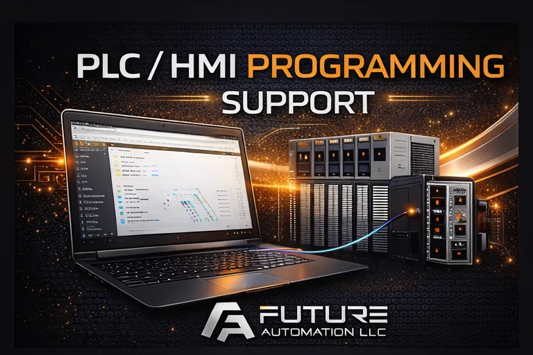

Controls & PLC Specialist — Contract / Project Based
I support contractor agencies and maintenance teams when controls work is critical: PLC/HMI programming, panel design review, commissioning, and plant-down recovery.
Not a “full-service electrical shop.” I’m the escalation layer when it has to work — and I document what I change so your team can own it after I leave.

When to Bring Me In
- Panels are wired but logic isn’t right
- Startup is stalling and fingers are pointing
- A plant manager wants answers, not excuses
- Your electricians need a controls backstop
- Recurring faults nobody can pin down
What You Get
Clear diagnosis
Root cause, corrective action, and a plan to keep it from coming back.
Clean, maintainable code
No mystery rungs. No “only one guy understands it” logic.
Panels that pass reality
Design review focused on safety, noise, serviceability, and what fails in the field.
Less downtime
Faster startups, fewer repeat calls, fewer “it worked yesterday” surprises.
Typical Engagements
- Panel design review: I/O list sanity check, safety chain review, power separation, shielding/grounding, documentation corrections.
- PLC work: new routines, cleanup, interlocks, alarms, device integrations, migrations and upgrades.
- Commissioning support: startup checklists, bring-up, tuning, and operator handoff.
- Plant-down escalation: quick triage → isolate → fix → verify → document.
- Contractor support: your team builds it — I make the controls behave so you keep the relationship.
PLC/HMI Programming That Survives Shift Change
Clean structure, consistent naming, and operator-first screens — so maintenance can troubleshoot without calling a wizard.
- Readable routines, clear alarms, and sane interlocks
- HMI screens built for fast diagnosis (not pretty guesswork)
- Backups, change notes, and “what to check next time” documentation
- Remote support ready (VPN/secure access friendly)
How I Work
I’m not here to replace your electricians. I’m here to protect the outcome. I’ll collaborate with your team, document what I change, and leave you with a system that’s easier to maintain.
Fast response options: remote troubleshooting, scheduled project support, or on-site commissioning/plant-down help.
Ready when you are
If you have a panel design to sanity-check, a PLC problem that won’t die, or a startup that’s going sideways — send the details and I’ll tell you the fastest path to green.
Request Support